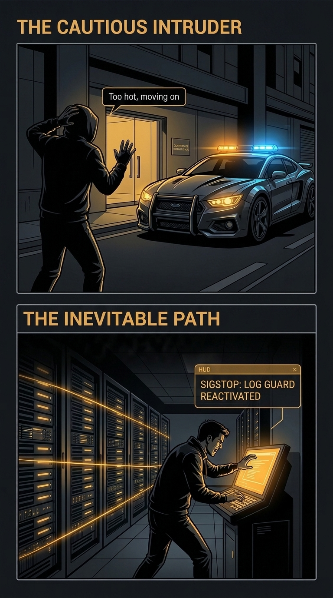

The Detection Hamster Wheel
- Heavy agents: security software slows laptops and breaks with updates.
- Endless signatures: attackers change one setting and slip past.
- Alert flood: warnings pile up with nobody to read them.
- Blind spot: an attacker who silences the logs simply disappears.
Make the Attacker Defeat Themselves
- Vaccinated hosts: machines look like a researcher's lab, so cautious malware quits.
- Native records: the computer's own audit trail, kept at no extra cost.
- 必经之路 tripwires: the steps an attacker cannot skip raise the alarm.
- Self-healing logging: silence the logs, and our guard switches them back on.
1. The Detection Hamster Wheel
For twenty years, endpoint security has meant one thing: install a heavy agent on every machine, watch for bad behaviour, and chase every new attack technique.
It is a race defenders cannot win. Attackers change one setting and the signature no longer matches. The agents slow down old laptops and clash with updates. The alerts need trained analysts to read them, around the clock.
A non-profit with one IT volunteer cannot run on that wheel. So we stopped asking how to catch the malware, and asked a different question: how do we get it to leave by itself?
2. Malware Is Afraid of Being Watched
Serious malware has a weak spot, and its authors built it on purpose. Before it does anything harmful, it checks whether it is sitting in a security researcher's lab. If it sees the tools of an analyst, it shuts itself down so its secrets stay hidden.
Think of a burglar who sees a police car parked outside. He does not try the door. He walks on to the next house.
Endpoint vaccination parks that police car. We place the signs of an analyst's lab on your real computers, and the malware's own caution sends it away. That is 不战而胜: winning without fighting. Nothing blocks your staff, nobody watches their screens, and your network stays exactly as it is.

3. The Ones Who Stay Must Walk the Inevitable Path (必经之路)
Some attackers do not scare easily. It might be a careful human, or an AI agent that does not care whose machine it is on. They still arrive blind, and to get anywhere they must take the same three steps.
- Looking around: In a segmented network, a laptop has no business reason to scan its neighbours. We leave decoys exactly where an explorer looks. The moment one is touched, we are alerted and the program that touched it is frozen.
- Gaining control: Taking over a machine leaves marks in its own audit trail, the native records Linux and Windows can keep at no extra cost, and that auditors already ask for.
- Silencing the logs: With control, the attacker will almost certainly try to switch off or tamper with those records to cover their tracks. Day-to-day work does not need the logs switched off, and planned maintenance is rare and known in advance. So an unexpected attempt stands out as a strong alarm, and our guard sensor switches the logging straight back on.
Either way, the attacker loses. The cautious ones leave without a fight. The bold ones must eventually make the moves that signal their presence. We win without ever chasing them.